In this homework, I implemented a basic triangle rasterizer that can render single-color triangles,
antialiased triangles using supersampling, and textured triangles using barycentric coordinates and mipmaps. I also implemented a simple transform system to apply transformations to the triangles before rasterization. Through this homework, I learned about the fundamental concepts of computer graphics, such as rasterization, antialiasing, texture mapping, and transformations.
I also gained hands-on experience with implementing these concepts in code, which helped me to better understand how they work in practice.
The most interesting part of this work is that after debugging the LOD computation and trilinear interpolation for mipmapping, I was able to see the significant improvement in image quality when rendering minified textures. It was fascinating to see how the combination of pixel sampling and level sampling can effectively reduce aliasing artifacts and produce smoother images.
Task 1: Drawing Single-Color Triangles
Single-Color Triangle Rasterization Procedure:
First determined the triangle's bounding box by the variables min_x, max_x, min_y, and max_y.
Second, construct three linear interpolation functions \(E_i(x, y) = a_ix + b_iy + c_i\) and compute the coefficients \(a_i\), \(b_i\), and \(c_i\) for each edge.
Third, start iterating over each pixel in the bounding box and check if it is inside the triangle using the edge functions.
Finally, if the pixel is inside the triangle, color it with the triangle's color.
To make sure that the algorithm is no worse than checking every sample within the bounding box, we attribute the efficiency to three factors:
Consistency: The bouding is explicitly computed to be the smallest axis-aligned rectangle that contains the triangle, so we are guaranteed to only check pixels that are potentially inside the triangle.
Less Redundancy in Loop:Incremental Updates on the edge functions allow us to compute the edge function values for the next pixel in constant time, which is more efficient than recomputing the edge function values from scratch for each pixel.
Row Major Iteration: Since the image buffer is stored as a row-major manner, it priorizes spatial locality and cache performance when we iterate over the pixels by the x axis in the inner loop and by the y axis in the outer loop.
The rasterization of `basic/test1.svg` is shown below:
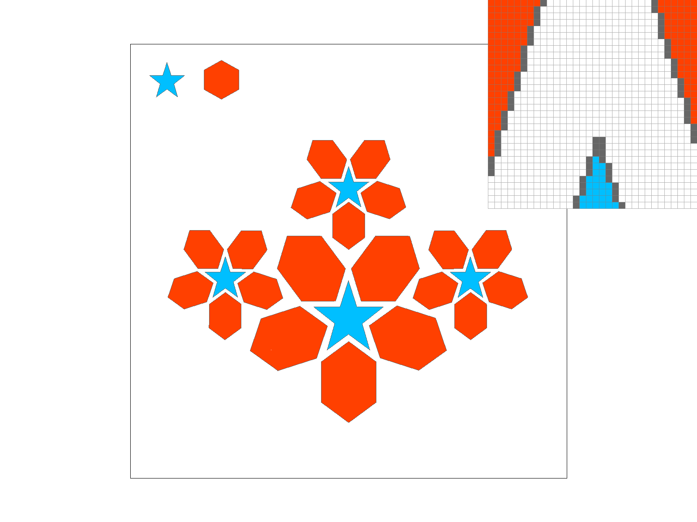
Rasterization of `basic/test1.svg`.
Task 2: Antialiasing by Supersampling
Supersampling Procedure:
First, we determine the stride of the supersampling grid based on the number of samples per pixel. For example, if we have 4 samples per pixel, we can use a 2x2 grid.
Second, we iterate over each pixel and for each pixel, we iterate over the supersampling grid to compute the color of each subpixel sample using the same triangle rasterization procedure as in Task 1.
Finally, we average the colors of the subpixel samples to get the final color of the pixel.
Supersampling is useful for antialiasing because it reduces the high frequency aliasing artifacts that can occur when rendering high-contrast edges, such as the edges of triangles. By taking multiple samples within each pixel and averaging their colors, we can produce smoother transitions between colors and reduce the jagged edges that are characteristic of aliased images.
In fact, the more samples we take per pixel, the smoother the resulting image will be, as it will better capture the variations in color and intensity across the pixel. However, this also comes at the cost of increased computational complexity, as we need to perform more calculations for each pixel.
These figures show the aliasing effects under the supersampling rates of 1, 4, and 16 samples per pixel, respectively. As we can see, the image becomes smoother and less aliased as we increase the number of samples per pixel.
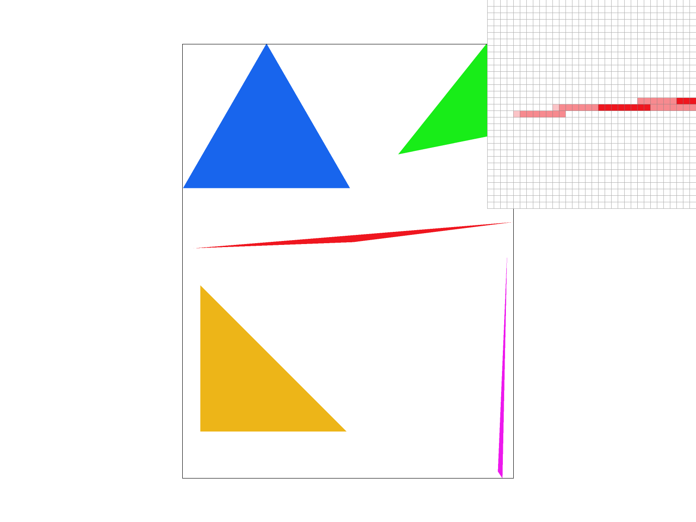
Supersampling with 1, 4, and 16 samples per pixel.
Task 3: Transforms
This is my_robot.svg after applying a combination of scaling, rotation, and translation operations.
It looks like a robot that is dancing or waving its arms.
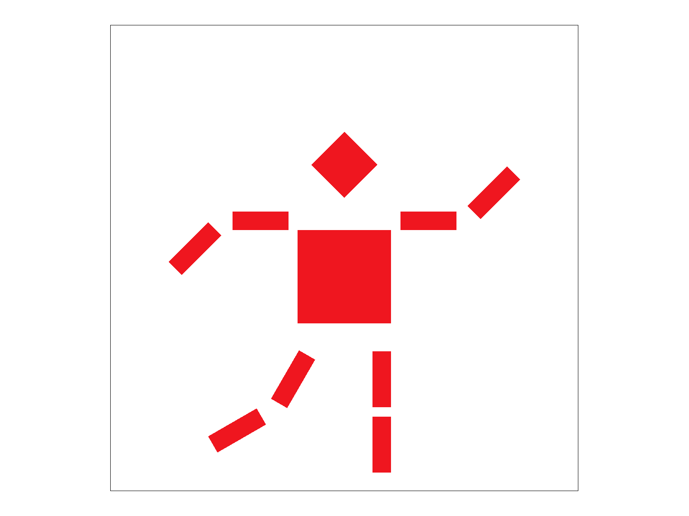
Transformed my_robot.svg.
Task 4: Barycentric coordinates
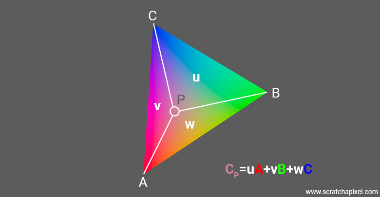
Barycentric coordinates are a coordinate system for triangles that allows us to express any point within the triangle as a weighted average of the triangle's vertices.
Barycentric coordinates are often denoted as \((u, v, w)\) where \(u\), \(v\), and \(w\) are the weights corresponding to the three vertices of the triangle.
To compute the barycentric coordinates of a point \(P\) with respect to a triangle defined by vertices \(A\), \(B\), and \(C\), we can use the following formulas:
\[
u = \frac{Area(PBC)}{Area(ABC)}, \quad v = \frac{Area(PCA)}{Area(ABC)}, \quad w = \frac{Area(PAB)}{Area(ABC)}
\]
where \(Area(ABC)\) is the area of the triangle formed by vertices \(A\), \(B\), and \(C\), and \(Area(PBC)\), \(Area(PCA)\), and \(Area(PAB)\) are the areas of the triangles formed by point
\(P\) and the edges of the triangle.
This is the sample that generates the barycentric interpolation of RGB colors across the circle:
Barycentric interpolation of RGB colors across the circle.
Task 5: "Pixel sampling" for texture mapping
Pixel sampling Procedure:
Pixel sampling bridges the gap between screen coordinates and texture images. Since screen pixels rarely align perfectly with texture pixels—commonly known as texels—especially under geometric transformations like scaling or perspective projection, we must mathematically sample the texture to determine the appropriate continuous color.
In my implementation within the rasterization pipeline, I utilized barycentric coordinates to interpolate the \(u\) and \(v\) texture coordinates for every geometric sample inside a triangle. These interpolated coordinates are then packed into a parameter struct and passed to the primary texture sampling function,
which scales the normalized \(u, v\) values by the texture's actual dimensions to map exactly to the corresponding texel grid.
When applying nearest-neighbor sampling, the approach prioritizes computational speed and simplicity.
By taking the continuous, scaled \(u, v\) coordinates and using a floor operation to snap them to the nearest integer index, the algorithm identifies the single closest texel. This direct grid-snapping logic dictates the final output color without any further blending.
Visually, this creates a distinct, blocky, and highly pixelated appearance whenever an image is magnified, strongly reminiscent of retro 8-bit graphical styles.
Conversely, bilinear interpolation offers a more sophisticated alternative that yields significantly smoother visual results.
Rather than selecting a single isolated texel, this method identifies the four closest texels perfectly surrounding our target continuous \(u, v\) coordinate. By extracting the fractional offsets of the sample point relative to this \(2 \times 2\) grid, the algorithm computes a precise weighted average of these four foundational colors. In the codebase, this is achieved by fetching the four colors and performing three distinct linear interpolations based on the fractional horizontal and vertical distances. Consequently, this eliminates the harsh, blocky artifacts of the nearest-neighbor approach, replacing them with smooth, continuous color transitions across magnified areas of the texture.
What I found the best example to demonstrate the priority of bilinear interpolation over nearest-neighborhood is texmap/test1.svg:
Texture mapping with nearest-neighbor sampling under 1 and 16 samples per pixel.
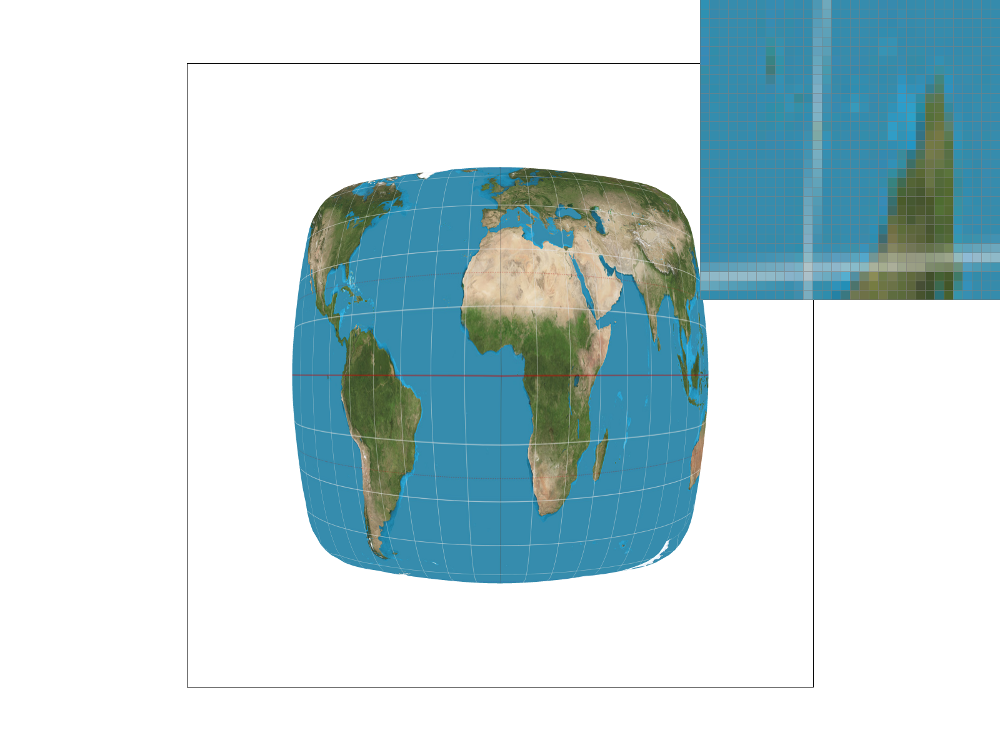
Texture mapping with bilinear interpolation under 1 and 16 samples per pixel.
It is evident that the nearest-neigborhood sampling produces a highly aliased, pixelated image with harsh latitudinal and longitudinal lines, while the bilinear interpolation produces a much smoother image with significantly reduced aliasing artifacts.
Task 6: "Level Sampling" with mipmaps for texture mapping
Level sampling, commonly known as mipmapping, is a technique specifically engineered to combat the texture aliasing that occurs when a high-resolution texture is compressed into a small geometric area on the screen (minification). If we were to only sample from the original, full-resolution image, a single screen pixel might inadvertently skip across dozens of texels, leading to severe Moiré patterns, high-frequency noise, and shimmering artifacts as the camera moves. To circumvent this, the system pre-computes a hierarchy of progressively downsampled texture images. By halving the resolution at each step, we create a pyramid of textures where each level represents a pre-filtered version of the original image, perfectly suited for viewing at different distances.
In my programmatic implementation, the core challenge was determining which mipmap level mathematically matches the screen pixel's current footprint. I achieved this by calculating the partial derivatives of the texture coordinates with respect to the screen space coordinates. By evaluating exactly how much the \(u\) and \(v\) values change when we step exactly one pixel horizontally (\(dx\)) or vertically (\(dy\)), I extracted the maximum rate of change. Taking the base-2 logarithm of this maximum vector length yields an ideal, continuous mipmap level, denoted as \(D\). Depending on the chosen configuration, the algorithm either rounds \(D\) to the nearest integer to sample a single optimal level, or, for trilinear filtering, it samples from the two adjacent integer levels (\(\lfloor D \rfloor\) and \(\lceil D \rceil\)) and linearly interpolates the two resulting colors based on the fractional remainder of \(D\).
Tradeoffs: Speed, Memory, and Antialiasing Power
Configuring the rasterization pipeline involves balancing three distinct sampling parameters, each carrying unique tradeoffs regarding computational speed, memory footprint, and antialiasing efficacy. Adjusting the pixel sampling method (from nearest-neighbor to bilinear) introduces a moderate processing penalty because it requires fetching four texels from memory instead of just one and performing sequential linear interpolations. However, it requires absolutely zero extra memory and provides excellent foundational antialiasing for magnified textures by smoothing out harsh, blocky pixel transitions.
Conversely, enabling level sampling (mipmapping) fundamentally alters the memory requirements of the application. Generating and storing the mipmap hierarchy increases the overall texture memory footprint by approximately 33.3%. In terms of speed, evaluating the derivatives and interpolating across multiple mipmap levels (trilinear filtering) consumes more processor cycles. Yet, this is an exceptionally powerful antialiasing technique specifically for minified textures, as it completely eradicates Moiré patterns and distant rendering noise that pixel sampling alone cannot fix.
Finally, increasing the number of samples per pixel (supersampling) represents the most brute-force, general-purpose approach to antialiasing. Modifying this parameter severely impacts both speed and memory. For instance, a 4x supersampling rate mathematically quadruples the size of the required memory buffer and proportionally multiplies the time spent evaluating edge functions and writing to memory. Despite this massive performance cost, supersampling boasts the absolute highest antialiasing power; it physically samples the geometric scene at a higher resolution before down-filtering, seamlessly smoothing out harsh geometric edges (jaggies) and texture artifacts simultaneously, delivering unparalleled overall image quality.
The custom texture mapping sample (in texmap/test7.svg) created with 4 versions of the sampling configuration is shown below:
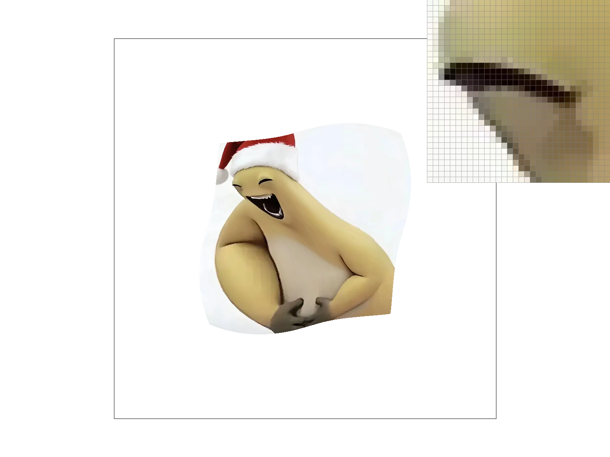
Texture mapping with nearest-neighbor and bilinear pixel sampling under 1 samples per pixel, with level 0 sampling.Texture mapping with nearest-neighbor and bilinear pixel sampling under 1 samples per pixel, with nearest level sampling.
1 samples per pixel, with level 1 sampling.
Also, the showcase with different sampling using zooming in and out is shown below:
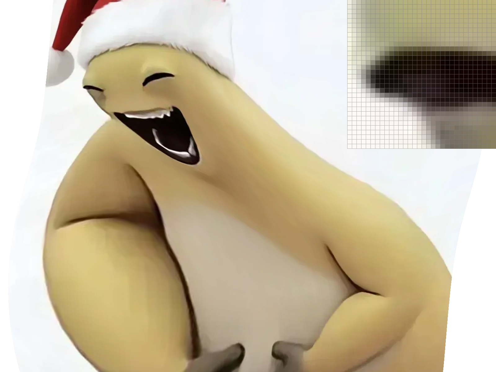
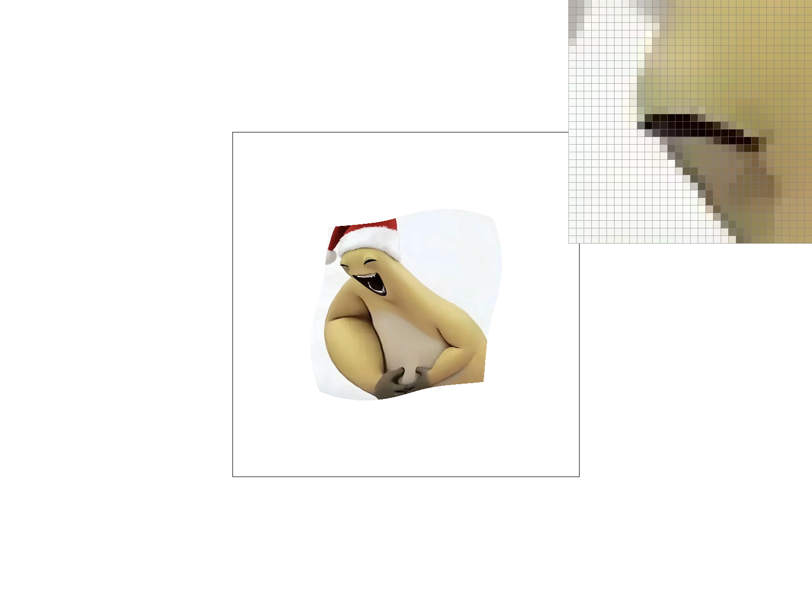
Texture mapping with bilinear pixel sampling under 1 samples per pixel, with nearest level sampling, without zooming, zooming in, and zooming out.
(Optional) Task 7: Extra Credit - Draw Something Creative!
In this creative task, I created a concentric spiral square pattern using the draw program and the spiral.svg input file. The resulting image is shown below:
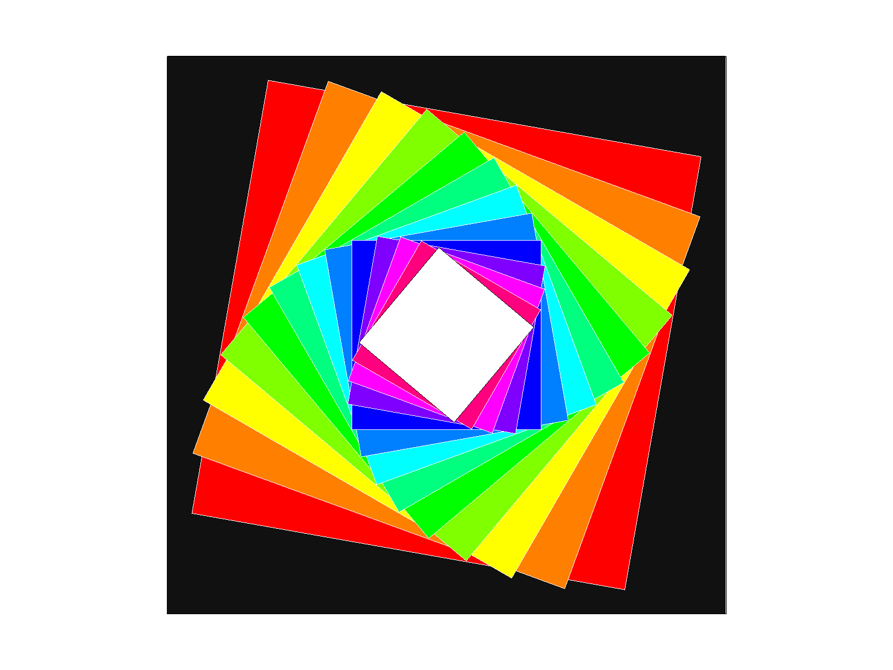
A concentric spiral square pattern.
The pattern is produced by nested g elements and applying a scaling and rotation of 10 degrees to each nested group. The result is a visually appealing spiral pattern that demonstrates the power of geometric transformations in computer graphics.
 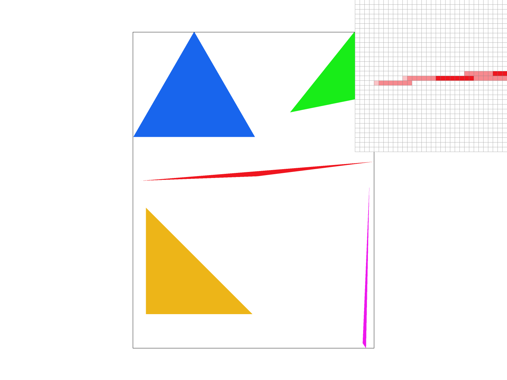
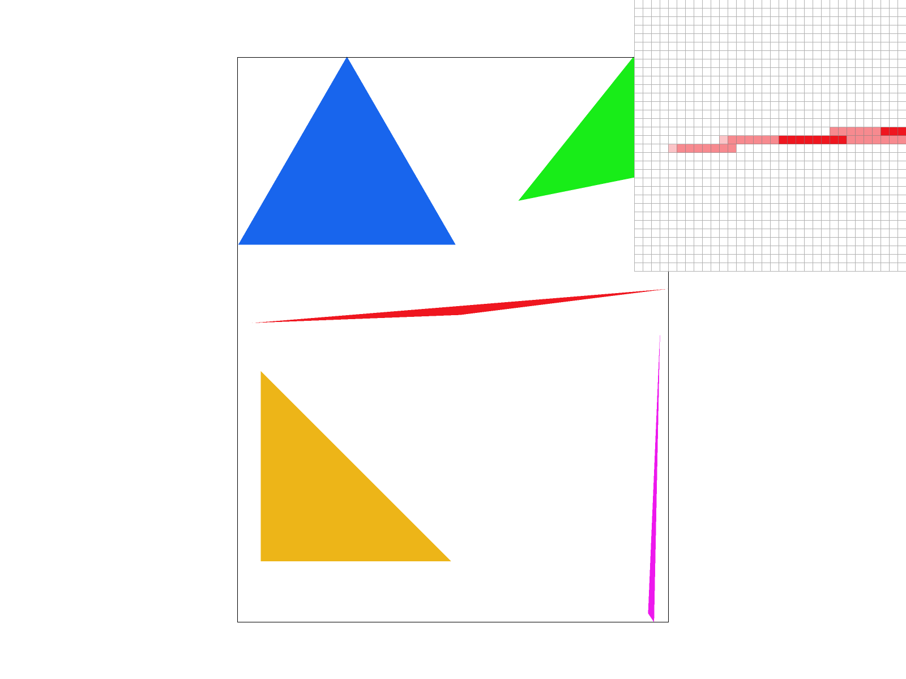


 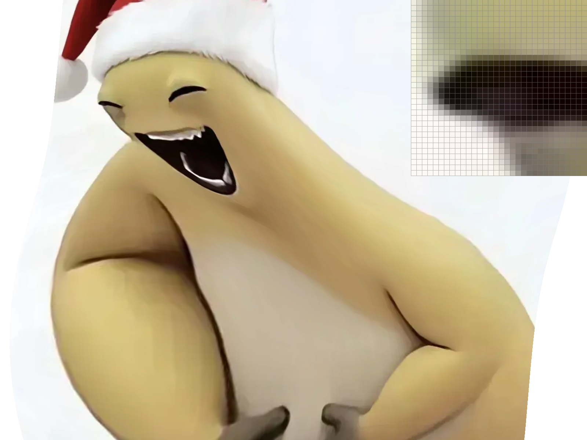
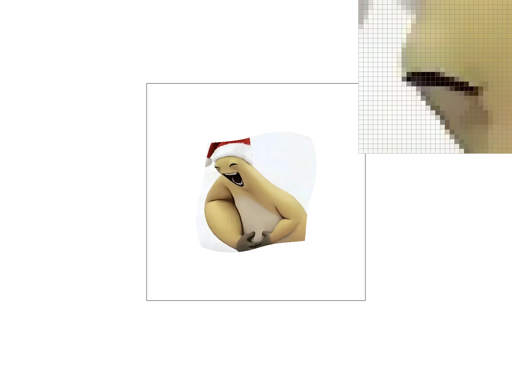
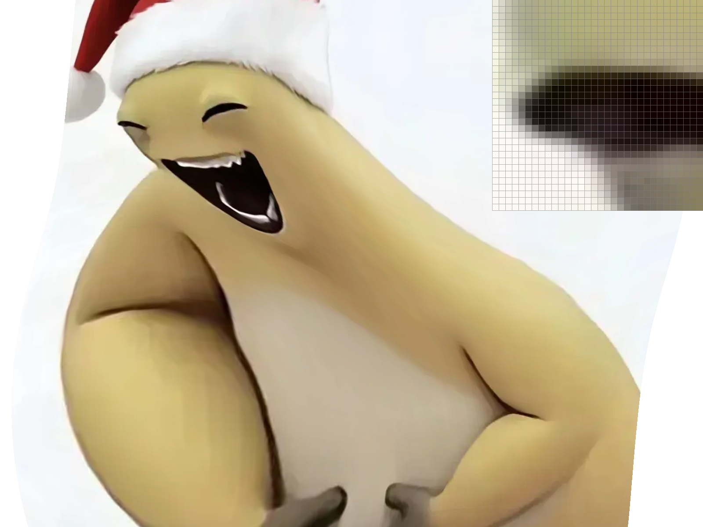
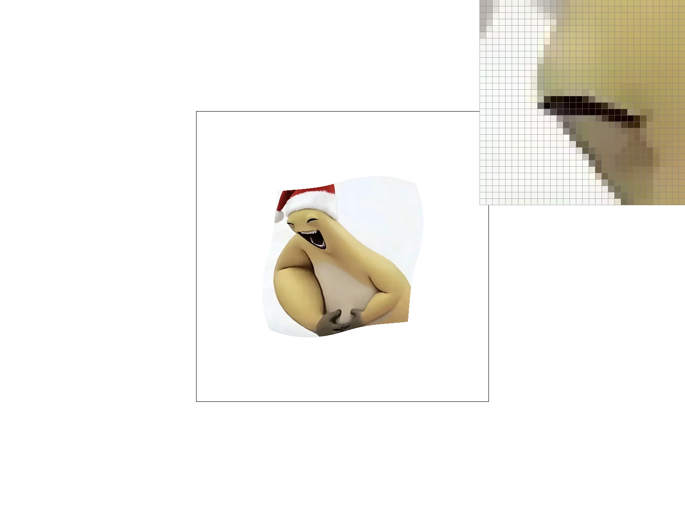